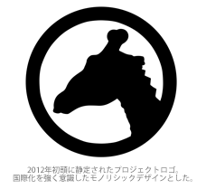

きりんさん
「正気か？このCD、本気で1000枚もプレスすんの？」
多方面からそう言われた。でも私はこの考えを全く変えようとは思わなかった。
誰だって、自由に歌っていいんだ。未来を見据えよう、自由をつかみ取ろう。
そう、きりんのように、遠くまで見渡そう。そう決めたのだから。
終着点、そして新たなる始まり。 - kirinsan.org
きりんさん 5周年記念盤

なんだかんだで6周年に近いですがきりんさんがこの世に出て5周年が経ちました。当時その頃はまだニコ動の黎明期、ニコ生はまだ影もなく、それどころか初音ミクすらまだ世に出ていない頃です。
きりんさんは、元々JASRAC管理楽曲であった「ぞうさん」のオルタナティブとして発案され、ふとネットラジオで口ずさんでしまった事から世に出たというインターネットという時代を象徴する情報網によって羽ばたいていった楽曲です。まっさらな時代に、まっさらな状態から、まさに突然生まれた曲だったのです。
その後一人歩きを始めたきりんさんは、幾度となくアレンジされ、歌われ、そして暫く忘れられたかと思ったら、忘れたことにまだ知らないアレンジが生まれ、まさにCGMの走りといってもいいコンテンツだったのです。
かねてからオープンソースであると公言してきたきりんさんは、昨年コミティアXのステージ上にてそのライセンスを「MITライセンス」と明言し、楽譜を含めたあらゆる情報をGithubに公開し、名実ともにオープンソースとなりました。その時より開発チームとして「kirinsan.org」、そして時をほぼ同じくして同ドメインによるサイトの公開も開始されます。奇しくも同年、PerfumeがモーションデータをGithubに公開するという試みを行い大変話題を集めました。そのムーブメントを先取りしていた点からも、手前味噌ながらきりんさんというプロジェクトは部分的ながらやはり先進的であったのではないかと自負する次第です。
きりんさんは、悪ノリの文化です。聴いていればいつの間にか楽しくなってきます。このCDは、ネット上に最初に流れたきりんさんから始まります。この時背後で聞こえてくる合いの手は、らむだーじゃん氏・YU氏・湯毛氏と、今をときめくニコ動の歌ってみた界の方々です。そして、きりんさんの新たなる幕開けが始まります。その後に続くのは、きりんさんのムーブメントを支えてきた数多くのバージョン、とりわけデンパカーJrの可愛らしいバージョン、きりんさんの悪のり文化の爆心地とも言えるヤヤネヒロコさんバージョン、そしてうたのおねいさんことIntercityさん、悪のり文化にまさに悪のり参加をしてくれたMOVE ON Entertainmentのコゲ犬さん・蛮さん、新しい試みににこっそり参加してくれている竜兵君と、きりんさんとネット音楽文化に関わるあらゆる方々の協力により、CDの規格に挑戦するような仕様となりました。
正直に申し上げます。このCDは相当にクセが強いかもしれません。しかし、きりんさんという童謡を楽しむ上ではこれ以上ない程の詰め込みっぷりは先ほども申し上げた通りです。ここには、ネット上で何気なく産み落とされたものが、多くの人たちの手を経て、何故かよく判らない方向に進化して言ってしまうという歴史が、コンパクトに収まっています。
象じゃだめなんだ。僕たちが伝えたいメッセージは、ぞういうことじゃないんだ。
童謡で世界を変える。そう本気で思い込んだkirinsan.orgの悪のりの真骨頂を、C84のkirinsan.orgブース、あるいはCDでお楽しみいただければ、私どもとしては最高に喜ばしい事です。
イイヨネ、きりんさん。
※このCDは、上のような文章をギャグとして受け止められるセンスをお持ちの方を主に対象としています。
オリジナルTシャツ KT/40㎠(二種)
フロントに輝くいいよね！ボタン、そしてどこかで見たことがあるような青と赤のクールなロゴの2種展開！バック側も勿論プリントされています！詳しくはこちら！
オリジナルマグカップ
Tシャツ異常に少数生産の超レアアイテムです。白いカップにブラックでオシャレにプリント！これでコーヒーを飲めば、あなたもたちまち首が伸びるかも！
ぞう・きりん歌唱意思表示カード
CD・グッズなにか1点でもお求め頂けた方には、このぞう・きりん歌唱意思表示カードをプレゼント！名前を書いてお財布に入れておこう！
当日突発頒布グッズ･展示物も！
最後のひと踏ん張りに、もうちょっとだけグッズを作るかも？！kirinsan.orgロゴ入りのクールなグッズで、毎日をちょっとだけ「いいよね！」しよう！